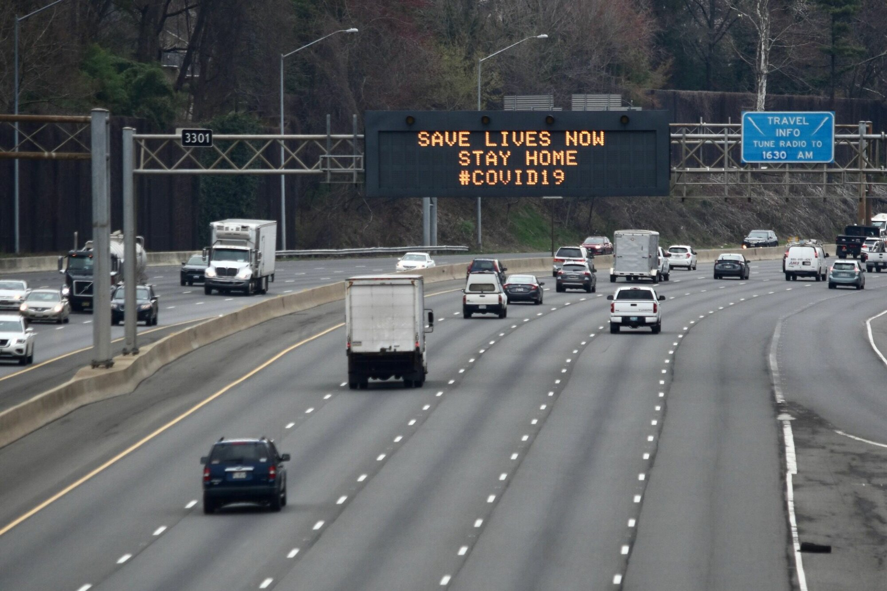
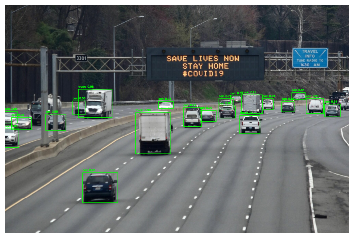

Object detection is a computer vision technique used to identify and locate objects within an image or video. This technique allows machines to recognize and detect various objects, such as people, cars, animals, and more, within their surroundings.
YOLO (You Only Look Once) is a state-of-the-art, real-time object detection system. It divides images into a grid and predicts bounding boxes and probabilities for each region. YOLO is known for its speed and accuracy, making it ideal for real-time applications.
YOLO works by dividing an image into a grid and predicting bounding boxes and probabilities for each grid cell. It uses a single neural network to process the entire image, making it faster than other object detection models.
# Load YOLO
net = cv2.dnn.readNet("yolov3.weights", "yolov3.cfg")
# Load class names
classes = []
with open("coco.names", "r") as f:
classes = [line.strip() for line in f.readlines()]
def detect_objects(image):
blob = cv2.dnn.blobFromImage(image, 1/255.0, (416, 416), swapRB=True, crop=False)
net.setInput(blob)
outputs = net.forward(net.getUnconnectedOutLayersNames())
# Process detections...
def handle_upload():
cap = cv2.VideoCapture(filename)
while True:
ret, frame = cap.read()
if not ret:
break
frame_with_boxes = detect_objects(frame)
out.write(frame_with_boxes)
Here are the images with detected objects:
 Here is the video with detected objects: